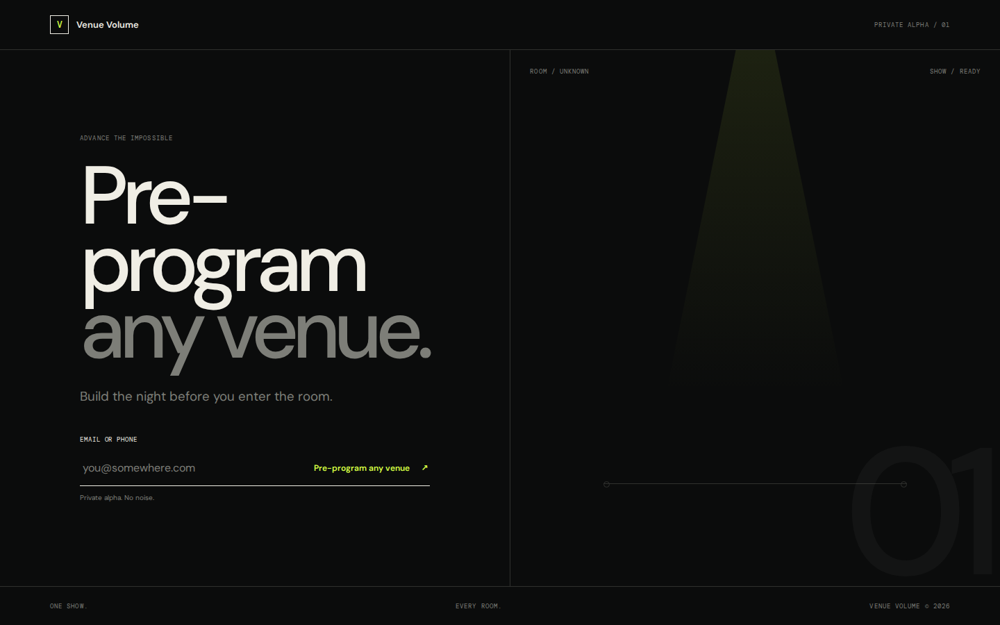
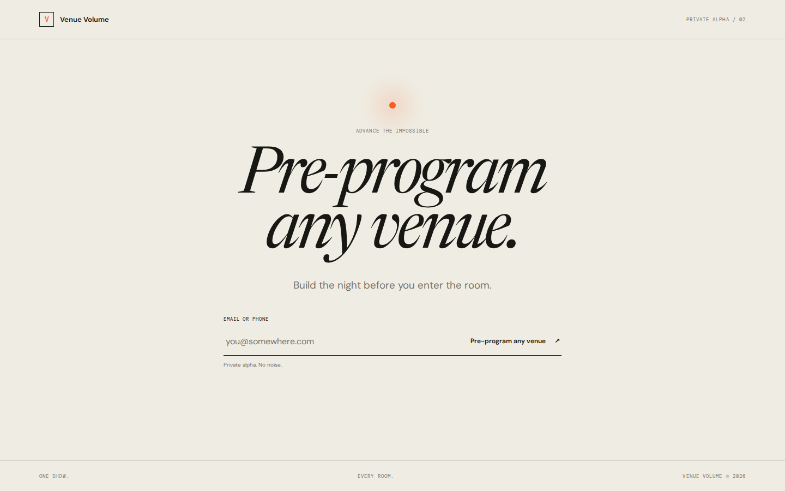
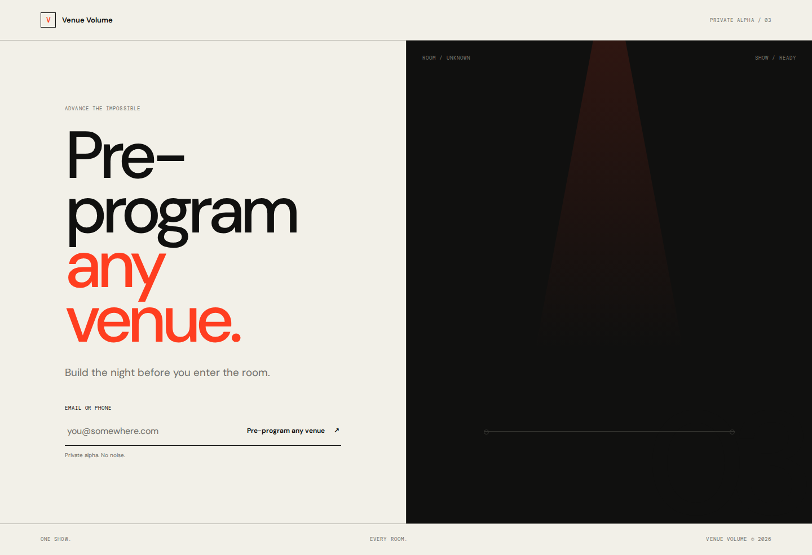
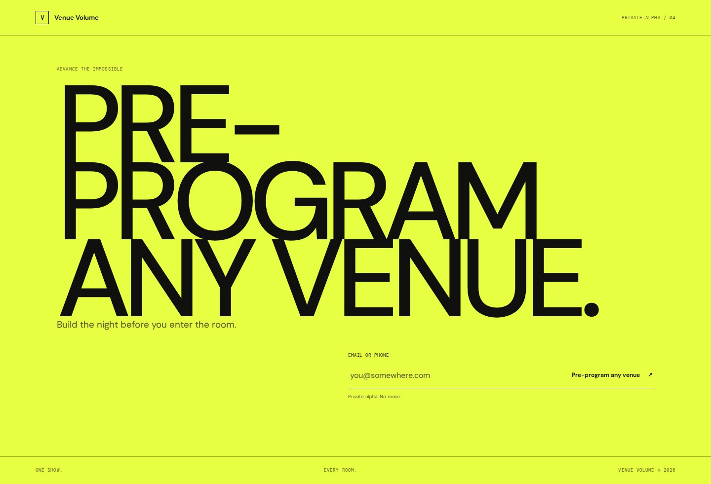
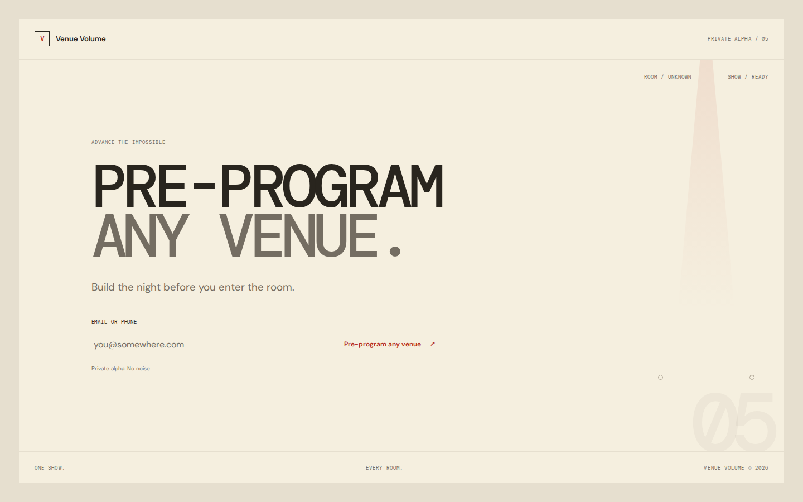
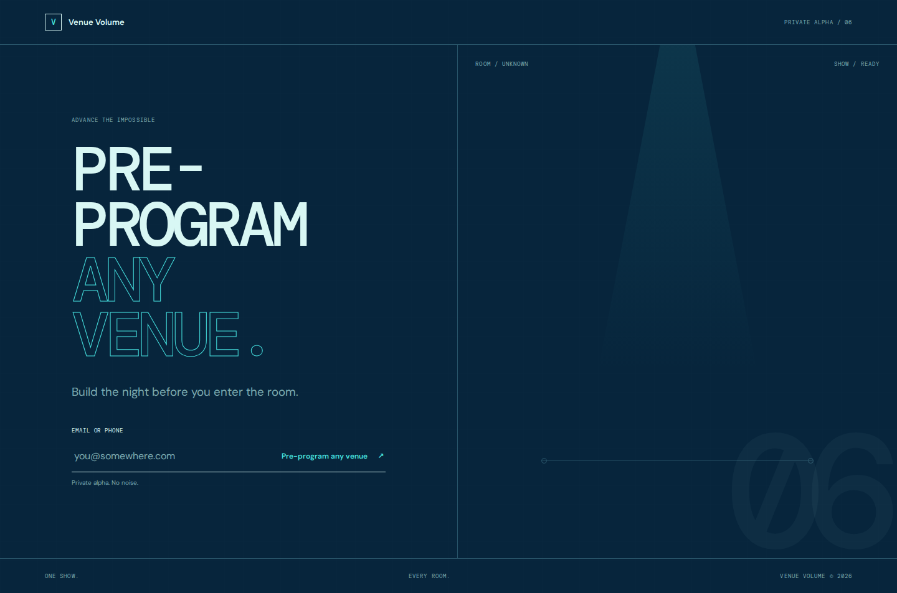
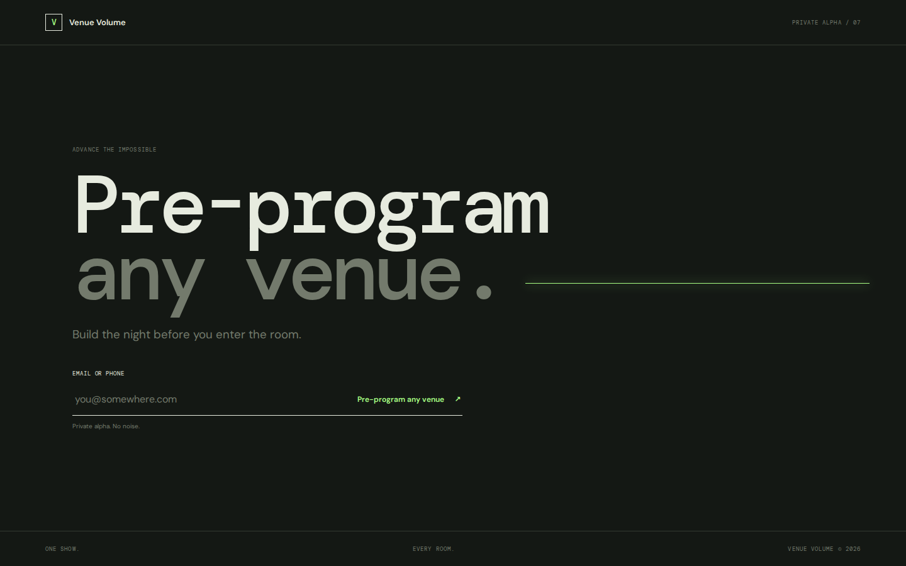
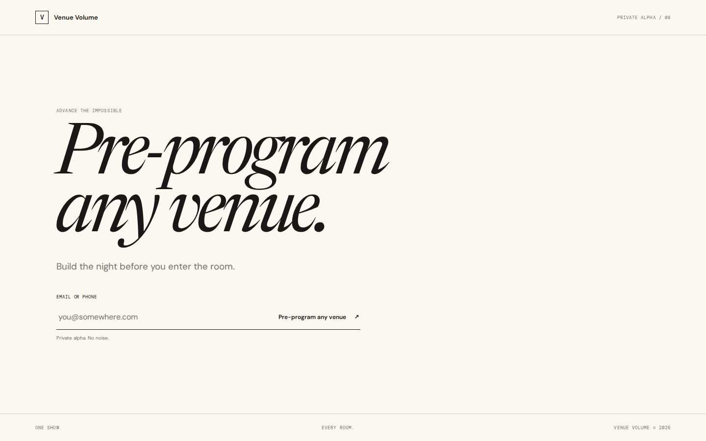
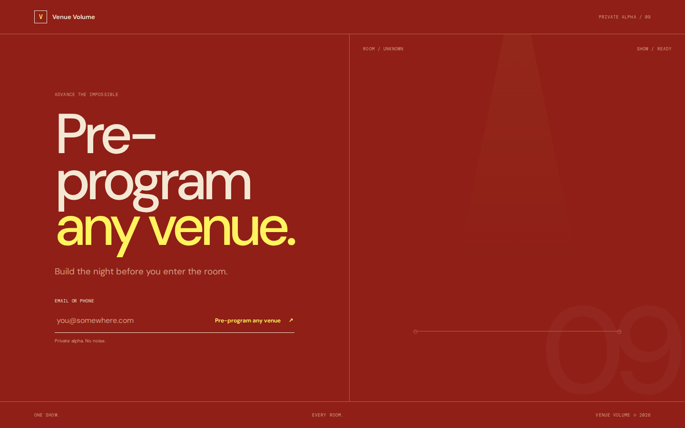
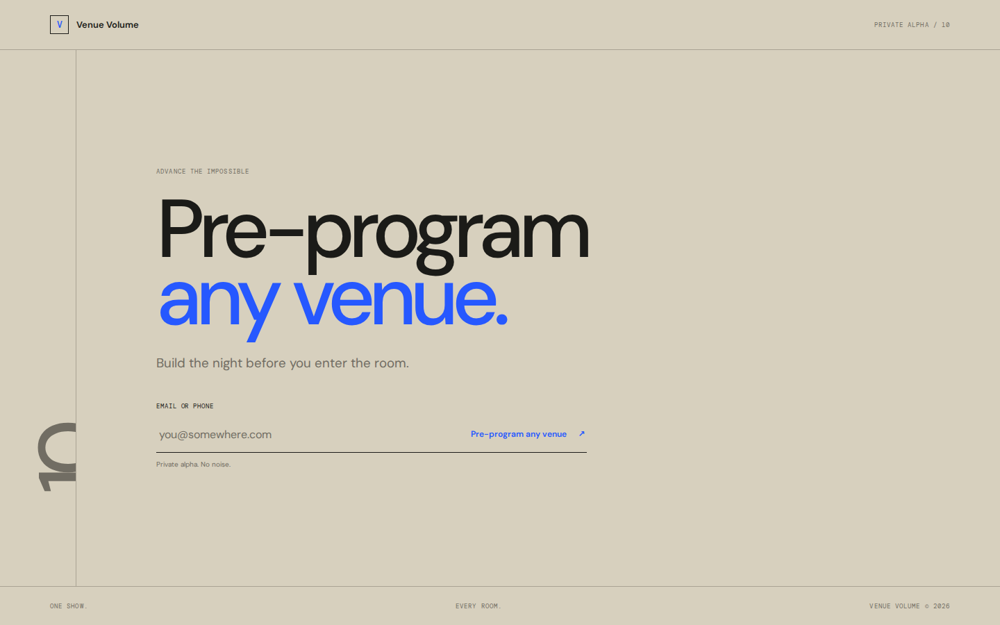

01 / Void · Recommended
Dark, unknown, precise.
Ten simplified directions · revision 02

Dark, unknown, precise.

Ceremonial, warm, centered.

The show meets the unknown room.

The promise becomes the poster.

Archival, utilitarian, compact.

Spatial, thin, exact.

Nearly nothing but a pulse.

Editorial and quiet.

One color, one action.

Margins, notes, negative space.